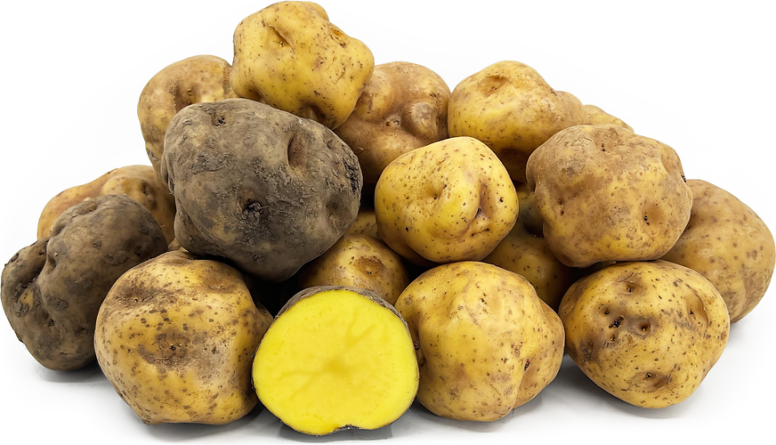
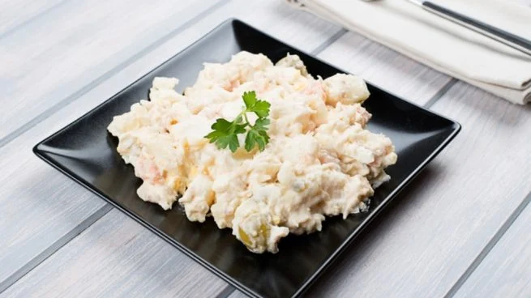

Sabor Criollo
Sabores peruanos que conquistan el corazón
Sabores peruanos que conquistan el corazón

La Causa Limeña es uno de los platos más representativos del Perú. Hecha a base de papa amarilla, ají amarillo, limón y un delicioso relleno de pollo o atún, combina frescura, color y un delicado equilibrio de sabores. Su textura suave y presentación vibrante conquistan cualquier mesa peruana.




Mira cómo preparar una deliciosa Causa Limeña con esta guía paso a paso.